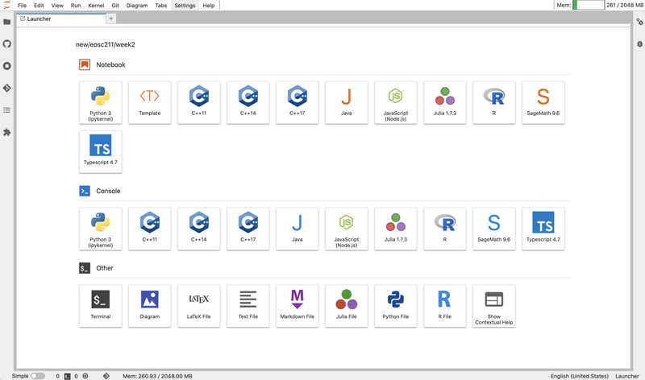
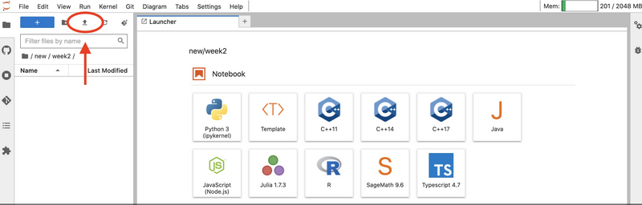
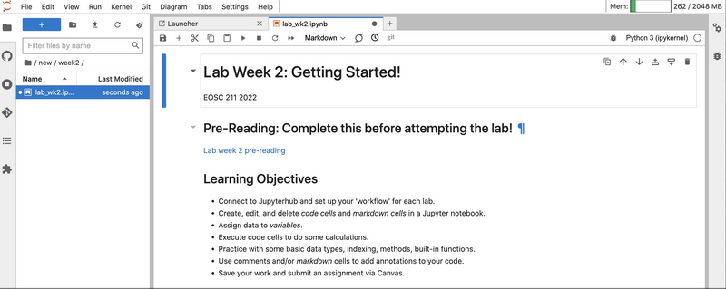
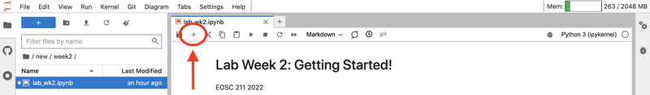
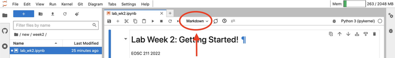
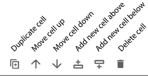

Getting started with UBC Jupyter Open Hub
Contents
Getting started with UBC Jupyter Open Hub#
EOSC 211 2022
To work on a lab on the UBC’s Jupyter Open Hub (or any .ipynb file on the course website, e.g. worksheets) do the following:
Download files from Canvas#
From Canvas, navigate to the Files page and download the lab, for example, wk02_lab.ipynb and any data files or images provided in the folder for the week. If downloading more than one file, the files will download as a ZIP file which require unzipping.
Upload files to Open Jupyter Hub#
Sign into Open Jupyter at https://open.jupyter.ubc.ca with your CWL. Your browser window will look something like this:
Make a new folder by pressing the button at the top of the file explorer located on the left hand side of the window. You can also create a new folder by right clicking the file explorer and selecting New > Folder.
Give your folder a descriptive name (e.g. week2 ) and double click the new folder to enter it.
Upload the lab files downloaded from Canvas (make sure they’re unzipped) into the new folder, either by dragging and dropping the files into the folder or by clicking the upload button and selecting the files to upload from your computer. Upload all files included in the lab folder.
Double click a file to open it and start working. When working in a Jupyter Notebook, your window should look like this:
Working with Notebooks in Open Hub#
Jupyter notebooks are divided into cells, which can be individually edited and run.
To create a new cell, click the [+] button in the notebook toolbar.
After a cell is created, cell type can be specified as either Code or Markdown by using the drop-down menu in the notebook toolbar.
The upper right corner of each cell contains a small toolbar in the upper right hand corner with the following functionality:
Cells can be duplicated by pressing the first button in the toolbar.
Cells can be moved up or down in the notebook by pressing the ↑ and ↓ buttons in the upper right corner of the cell.
New cells can be inserted above the selected cell with the corresponding button, or by clicking the whitespace to the left of the cell and typing
a.New cells can be inserted below the selected cell with the corresponding button, or by clicking the whitespace to the left of the cell and typing
b.Cells can be deleted by pressing the trash can icon in the upper right corner of the cell, or by selecting the cell by clicking the whitespace to the left of the cell and typing
dd.
Code Cells#
Code cells are where you can write, edit, and run code. Text entered into code cells will be shown with syntax highlighting, with python reserved words shown in green, strings shown in red, and comments in blue.
You can execute code cells by pressing [▸ Run], or [Ctrl]/[Command] + [Enter] (execute current cell), [Shift] + [Enter] (run current cell and select the next one), or [Alt] + [Enter] (execute current cell and create a new one below).
In [1]: 1 print("Hello World!")
Hello World!
The “Hello World” program is a long-standing tradition in computer programming as a first program in a new language.
You can write multiple lines of code in one cell, the python interpreter will execute each line of code in the order it appears, e.g. the following code block will execute from the top down:
In [1]: 1 print("Hello Earth")
2 print("Hello Ocean")
3 print("Hello Atmosphere")
Hello Earth
Hello Ocean
Hello Atmosphere
Text written in code cells needs to be syntactically correct in order to execute, i.e. it needs to contain a valid combination of reserved words, operations and variables that can be parsed by the python interpreter. Invalid code will raise an error.
If there is something wrong with a code cell, the python interpreter stops execution and produces a traceback message. Traceback messages appear below a code cell and usually give you a helpful hint as to what is wrong and how to fix it. Some messages can be a bit cryptic; if this is the case, try searching the internet, for example on StackOverflow https://stackoverflow.com/, or ask the nearest classmate, TA, or professor for help.
Cell Execution Order and Restarting the Kernel#
Within a cell, lines of code are executed in the order they are written. Code cells will execute in any order you decide. The order in which cells are executed appears to the left e.g. In [7]:indicates that a particular cell is the seventh cell to be run in the notebook.
Press the [↻] button in the notebook toolbar to restart the kernel. Restarting the kernel instructs the notebook interpreter to forget all variables and start over from scratch. The [▸▸] button restarts the kernel then immediately executes each cell in order from top to bottom.
Important
In EOSC 211, when we grade a submitted notebook, all cells will be executed in sequence starting at the top. Before you submit, restart the kernel and run the whole notebook from top to bottom and make sure it produces the result you want.
Markdown Cells#
One of the big learning goals in this course is writing code that is well documented. It should be easy for another programmer (or your future self) to look at your code and understand what is happening in each code cell and why. A major reason we chose to teach this course with Jupyter Notebooks is that nicelyformatted commentary between blocks of executable computer code can be written using Markdown cells.
Unlike code cells, Markdown cells don’t execute or produce outputs, they simply render plain text into nicely formatted paragraphs using a markup language called Markdown. The cell you are reading right now is written in Markdown; double click on it to see the plain text before rendering. Press [Shift] + [Enter] to re-render the cell.
The main focus of this course is writing Python code, so you won’t be expected to learn every part of the markdown syntax, but you will need to be able to edit markdown cells in order to complete long answer questions.
Markdown basics can be found here: https://www.markdownguide.org/cheat-sheet/.